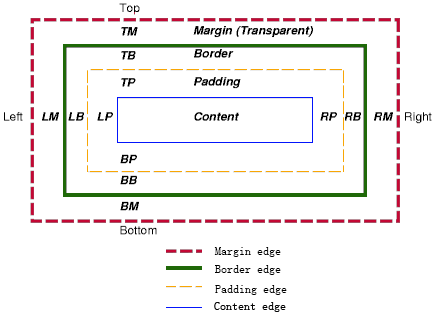

关于css盒子模型，以前总是不太清楚，尤其对于margin和padding老是混淆。其实主要是没有系统的学习一下，没有理解其内在实现和布局结构。我们只要掌握了盒子模型中的几个属性，就会自然而然地学会了css盒子模型，再练习一下demo，就可以完全掌握其实现原理。首先通过一张flash来看一下盒子模型中margin、background-color、background-image、border和padding，以及他们之间的关系。
从上面的flash可以清楚的看到盒子模型各属性的内部结构。CSS 规范中描述的盒子模型被称为“框模型”（box model），包括 content box、padding box、border box 和 margin box，它们是不可分割的，并可能会重合。 下面再给出一张示意图
注：padding、border 和 margin 区域都包括 top、right、bottom、left 四部分。如图所示（"LM" 代表 left margin，"RP" 代表 right padding，"TB" 代表 top border……）。
上面的大框，代表一个元素生成的矩形区域( box )，每一个 box 都包括一个 content 区域（元素的内容，如文本，图形等）以及环绕其四周的 padding (元素的内边距，填充部分)、border (元素的边框) 和 margin (元素的外边距) 区域。
下面给出一例子
关于盒子模型需要注意的几个地方
margin应用范围
margin 可以应用在非 table 类型的元素上，以及 table 类型中 table-caption, table 和 inline-table 这3类元素上。其他的不起作用， 比如 td tr th 等，margin 是不适用的。 并且，对于行内非替换元素（例如 SPAN），垂直方向的 margin 不起作用。
外边距折叠( Collapsing margins )
Collapsing margins，即外边距折叠，指的是毗邻的两个或多个外边距 (margin) 会合并成一个外边距。
其中所说的 margin 毗邻，可以归结为以下两点：
- 这两个或多个外边距没有被非空内容、padding、border 或 clear 分隔开。
- 这些 margin 都处于普通流中。
下面详细介绍其折叠规则
两个或多个毗邻的普通流中的块元素垂直方向上的 margin 会折叠
两个或多个：说明其数量必须是大于一个，又说明，折叠是元素与元素间相互的行为，不存在 A 和 B 折叠，B 没有和 A 折叠的现象。
毗邻：是指没有被非空内容、padding、border 或 clear 分隔开，说明其位置关系。
注意，在没有被分隔开的情况下，一个元素的 margin-top 会和它普通流中的第一个子元素(非浮动元素等)的 margin-top 毗邻； 只有在一个元素的 height 是 "auto" 的情况下，它的 margin-bottom 才会和它普通流中的最后一个子元素(非浮动元素等)的 margin-bottom 毗邻，要注意这个规则。
看下面的例子：
B
以上例子说明了如果一个元素的 height 特性的值不是 auto，那么它的 margin-bottom 和它子元素的 margin-bottom 不算毗邻，因此，不会发生折叠。 margin-top 没有此限制，所以是 100px，margin-bottom 没有折叠，只有 50px。
垂直方向：是指具体的方位，只有垂直方向的 margin 才会折叠，也就是说，水平方向的 margin 不会发生折叠的现象。
折叠后 margin 的计算
1). 参与折叠的 margin 都是正值
例子：
AB
示意图

在 margin 都是正数的情况下，取其中 margin 较大的值为最终 margin 值。
2). 参与折叠的 margin 都是负值
当 margin 都是负值的时候，取的是其中绝对值较大的，然后，从 0 位置，负向位移。看下面例子
AB
示意图

3). 参与折叠的 margin 中有正值，有负值
如果，毗邻的 margin 中有正值，同时存在负值会怎样呢？有正有负，先取出负 margin 中绝对值中最大的，然后，和正 margin 值中最大的 margin 相加。看下面例子：
AB
示意图

上面的例子最终的 margin 应该是 100 + (-50) = 50px。
4). 相邻的 margin 要一起参与计算，不得分步计算
要注意，相邻的元素不一定非要是兄弟节点，父子节点也可以，即使不是兄弟父子节点也可以相邻。 而且，在计算时，相邻的 margin 要一起参与计算，不得分步计算。下面是个复杂的例子：
AB
错误的计算方式：算 A 和 B 之间的 margin，分别算 A 和其父元素的折叠，然后与其父元素的父元素的折叠，这个值算出来之后，应该是 90px。依此法算出 B 的为 80px；然后，A和B折叠，margin 为 90px。
请注意，多个 margin 相邻折叠成一个 margin，所以计算的时候，应该取所有相关的值一起计算，而不能分开分步来算。
以上例子中，A 和 B 之间的 margin 折叠产生的 margin，是6个相邻 margin 折叠的结果。将其 margin 值分为两组：
- 正值：50px，150px，200px
- 负值：-60px，-100px，-120px
根据有正有负时的计算规则，正值的最大值为 200px，负值中绝对值最大的是 -120px，所以，最终折叠后的 margin 应该是 200 + (-120) = 80px。
浮动元素、inline-block 元素、绝对定位元素的 margin 不会和垂直方向上其他元素的 margin 折叠
浮动元素的 margin 在垂直方向上也不会发生 margin 折叠，即使和它相邻的子元素也不会。看下面例子：
两个绿色的块儿之间，相距100px，而若 B 和它的浮动包含块发生 margin 折叠的话，金色的条应该位于绿色块的最上方，显然，没有发生折叠。
创建了块级格式化上下文的元素，不和它的子元素发生 margin 折叠
下面以 “overflow : hidden” 的元素为例：
若 B 和它的 "overflow:hidden" 包含块发生 margin 折叠的话，金色的条应该位于绿色块的最上方，否则，没有发生。
元素自身的 margin-bottom 和 margin-top 相邻时也会折叠
自身 margin-bottom 和 margin-top 相邻，只能是自身内容为空，垂直方向上 border、padding 为 0。看下面的例子：
上面例子中，我们得到的是红色边框是正方形，方框的宽高都应该是 100px，高度不应该是 150px。
关于margin折叠各大浏览器存在兼容性问题，尤其是ie6和ie7。